import pandas as pd
import numpy as npIntroduction à la visualisation de données
La visualisation de données (ou dataviz) est un outil indispensable pour faciliter la compréhension des données et mettre en lumière des phénomènes à partir de celles-ci, ainsi que pour favoriser une communication efficace des résultats des analyses. C’est néanmoins un domaine qui dépasse largement la seule compétence technique : les meilleures visualisations sont celles qui sont adaptées à la donnée qu’elles représentent, et qui parviennent à raconter une histoire à partir de celles-ci (data storytelling). Ce tutoriel ne vise donc pas à présenter en détails le sujet, mais propose une introduction aux principaux outils existants en Python pour produire des visualisations de données.
Nous commencerons notre exploration par les graphiques intégrés dans Pandas, très simples et donc parfaits pour une analyse rapide des données. Puis, nous découvrirons Seaborn, une librairie qui permet de créer des visualisations attrayantes en très peu de lignes de code. Ces deux librairies sont basées sur Matplotlib, la très complète librairie de référence pour la visualisation en Python, qui permet des niveaux de personnalisation très avancés mais dont l’utilisation s’avère plus complexe, et ne sera donc pas directement abordée dans ce TP.
Pandas
Comme nous l’avons vu dans le TP consacré, la librairie Pandas offre des outils nombreux et puissants pour manipuler les données tabulaires. Mais il est également équipé d’outils intégrés pour les visualiser. En particulier, la méthode .plot() permet de produire simplement des visualisations rapides des données analysées.
La méthode .plot()
La méthode .plot(), intégrée aux Series et aux DataFrames, simplifie le processus de création de graphiques en permettant de générer des visualisations standards avec une ligne de code, directement à partir de la structure de donnée. En coulisse, .plot() fait appel à Matplotlib pour le rendu graphique, ce qui signifie que tout graphique généré par Pandas peut être personnalisé davantage avec les fonctions de Matplotlib. Cette intégration offre un équilibre entre la commodité pour des tâches de visualisation rapides et la puissance de Matplotlib pour des besoins de personnalisation plus poussés, faisant de .plot() le point de départ idéal pour la visualisation de données en Python.
Exemples de graphiques
Même si la méthode .plot() permet de produire simplement et rapidement des graphiques, les possibilités sont très nombreuses et dépendent des données en entrée. Dans cette section, nous proposons quelques exemples standards pour comprendre le fonctionnement de la méthode. Pour découvrir plus de possibilités, on pourra s’inspirer des nombreux exemples de la documentation officielle.
Générons des données de synthèse imitant les données de caisse, qu’on utilisera comme base des graphiques.
# Configuration pour la reproductibilité
np.random.seed(0)
# Générer une plage de dates sur un mois
dates = pd.date_range(start='2023-01-01', end='2023-01-31', freq='D')
# Simuler des données de caisse pour le mois
N_POINTS = 1000
mean_price = 10
std_dev_price = 4
prices = np.random.normal(mean_price, std_dev_price, N_POINTS)
quantities = 10 - 0.5 * prices + np.random.normal(0, 1.5, N_POINTS)
data = {
'Date': np.random.choice(dates, N_POINTS),
'Transaction_ID': np.arange(N_POINTS) + 1,
'COICOP': np.random.choice(['01.1.1', '02.1.1', '03.1.1', '04.1.1'], N_POINTS),
'Enseigne': np.random.choice(['Carrefour', 'Casino', 'Lidl', 'Monoprix'], N_POINTS),
'Prix': prices,
'Quantité': quantities
}
# Créer le DataFrame
df_caisse = pd.DataFrame(data)
# Trier par date pour la cohérence
df_caisse = df_caisse.sort_values(by='Date').reset_index(drop=True)
# Afficher les premières lignes des données de caisse
print(df_caisse.head()) Date Transaction_ID COICOP Enseigne Prix Quantité
0 2023-01-01 766 02.1.1 Lidl 5.588375 9.151826
1 2023-01-01 32 03.1.1 Lidl 11.512650 4.450210
2 2023-01-01 139 02.1.1 Monoprix 11.584027 6.314805
3 2023-01-01 415 02.1.1 Casino 16.930885 0.861407
4 2023-01-01 418 01.1.1 Casino 10.568247 2.590971Nuage de points (scatter plot)
Les nuages de point permettent de visualiser la relation entre deux variables numériques continues. Illustrons cela à travers la relation entre le prix et les quantités des transactions.
df_caisse.plot(x='Quantité', y='Prix', kind='scatter')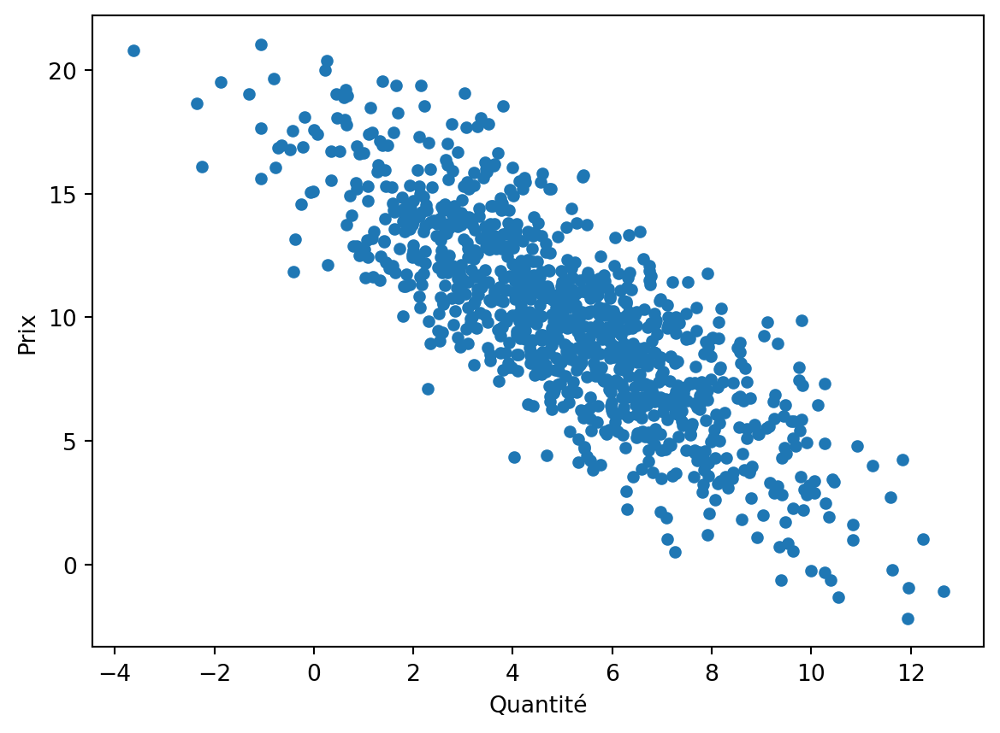
Diagrammes à barres (bar chart)
Les diagrammes en bâtons sont idéaux pour la comparaison visuelle de différentes catégories. Ici, on utilise la méthode .value_counts() pour récupérer les fréquences de chaque modalité dans une Series, à laquelle on applique la méthode .plot() pour visualiser un diagramme à barres.
df_caisse['Enseigne'].value_counts().plot(kind='bar')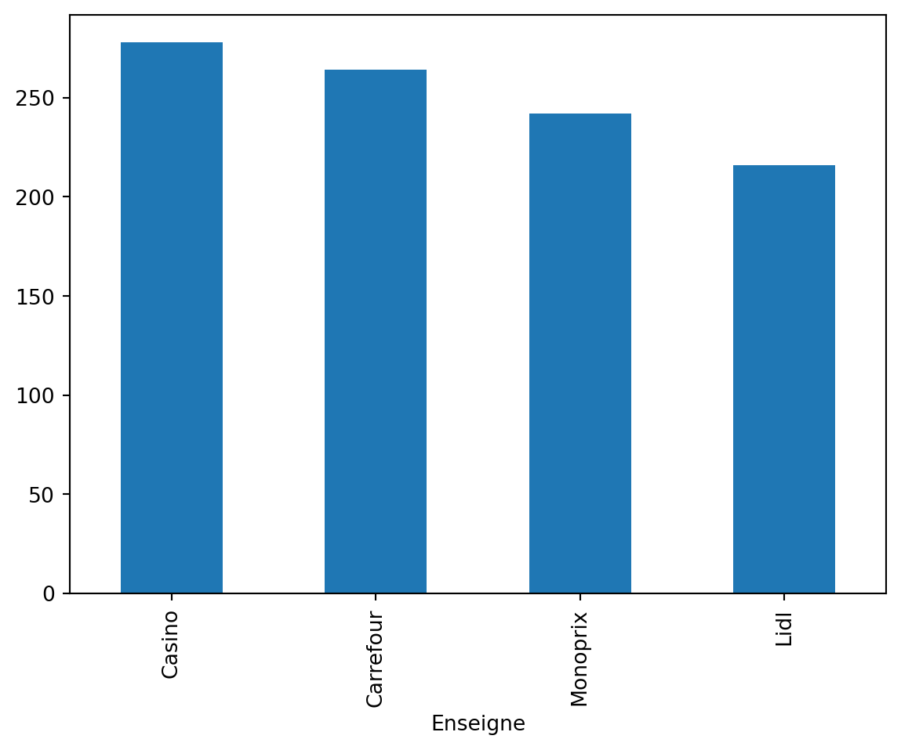
Boîte à moustaches
La boîte à moustache permet de visualiser rapidement les statistiques de dispersion d’une série statistique (médiane, quartiles, min, max) ainsi que la présence éventuelle de valeurs aberrantes
df_caisse['Prix'].plot(kind="box")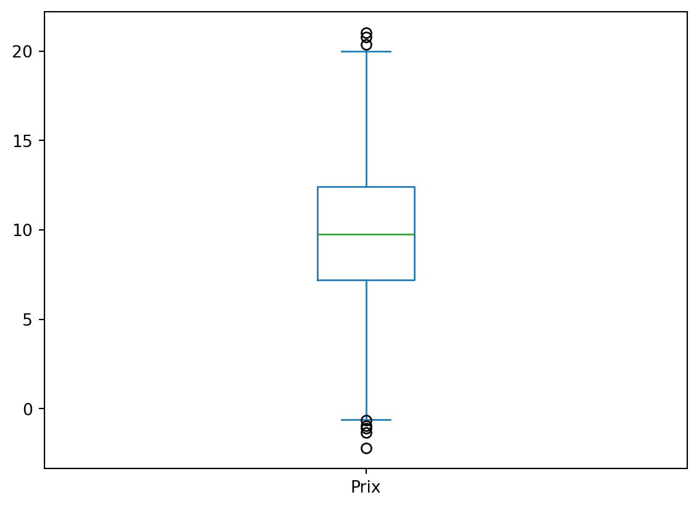
Histogrammes (histogram)
Les histogrammes aident à comprendre la distribution d’une variable numérique. Calculons l’histogramme des prix des transactions sur la période étudiée.
df_caisse['Prix'].plot(kind='hist', bins=20)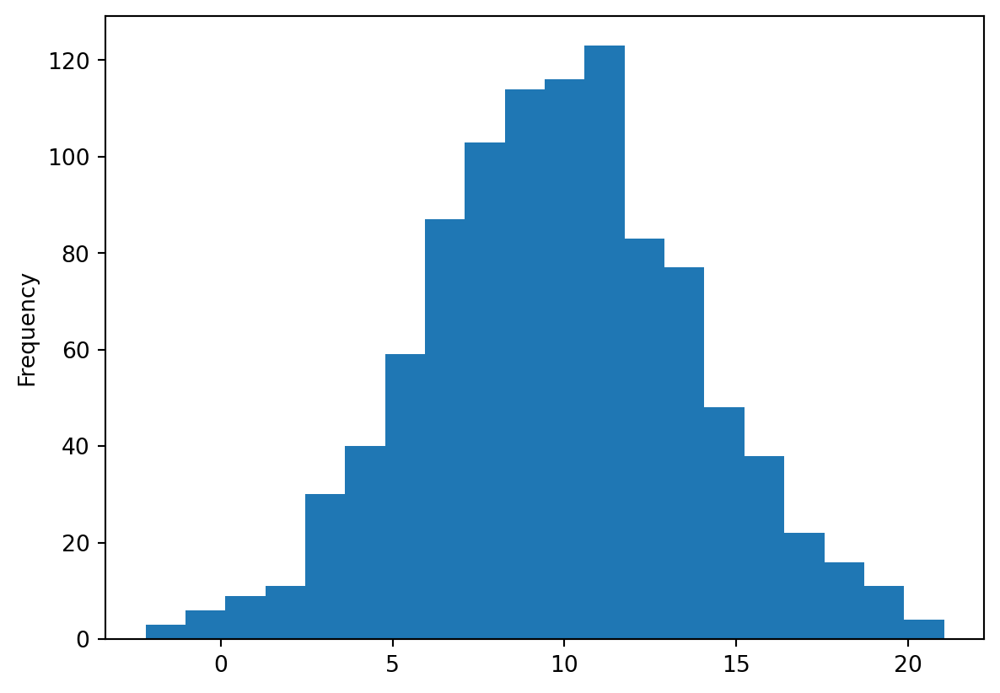
Graphique linéaire (lineplot)
df_caisse.groupby('Date')['Quantité'].sum().plot(kind='line')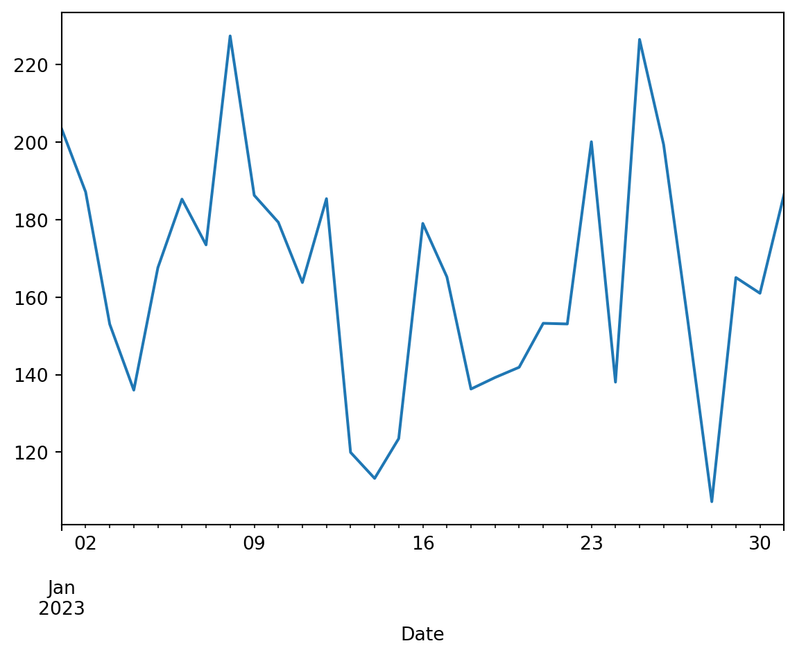
Personnalisation
Comme évoqué précédemment, la fonctionnalité de graphiques intégrée à Pandas repose en fait sur la librairie Matplotlib, dans la mesure où la méthode .plot() de Pandas n’est qu’une surcouche (wrapper) autour de la fonction plot() de Matplotlib. En théorie, toutes les possibilités de personnalisation permises par Matplotlib le sont avec les graphiques créés par ce biais en Pandas. Pour y accéder, il faut importer Matplotlib en plus de Pandas.
import matplotlib.pyplot as pltIllustrons quelques possibilités de personnalisation en reprenant un des graphiques précédents.
df_caisse.plot(x='Quantité', y='Prix', kind='scatter', color="green", alpha=0.6)
plt.title('Relation entre le prix et la quantité des produits')
plt.xlabel('Quantité vendue')
plt.xlabel('Prix (en €)')Text(0.5, 0, 'Prix (en €)')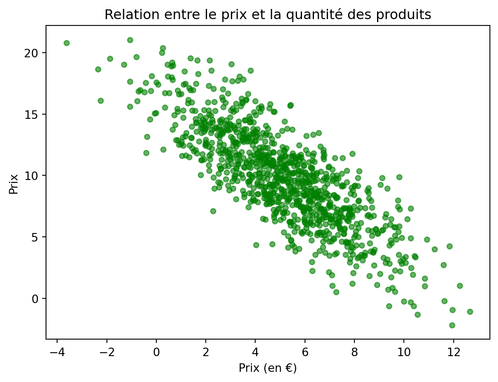
Aller plus loin
Là encore, de nombreuses autres possibilités sont décrites dans la documentation. Néanmoins, les fonctionnalités graphiques intégrées à Pandas restent avant tout faites pour de la visualisation rapide des données analysées. Pour des visualisations plus attrayantes sans avoir besoin de produire beaucoup plus de code, on préférera la librairie Seaborn.
Seaborn
Seaborn est une bibliothèque de visualisation de données qui offre une interface de haut niveau pour créer des graphiques statistiques esthétiques. Elle est également construite sur Matplotlib et s’intègre bien avec les structures de données Pandas, permettant des visualisations plus élaborées que celles proposées nativement par Pandas sans pour autant exiger une quantité de code significative. Cela en fait un excellent choix pour aller au-delà des capacités graphiques de Pandas tout en évitant la complexité de Matplotlib.
Importons le package Seaborn. L’usage courant est de lui donner l’alias sns pour éviter les redondances de code.
import seaborn as snsExemples de graphiques
Pour les mêmes graphiques que ceux réalisés précédemment avec Pandas, Seaborn offre des représentations beaucoup plus agréables à l’oeil. On en présente quelques unes dans la suite de ce tutoriel.
Nuage de points
On peut facilement ajouter de l’information à un nuage de point, par exemple via la couleur des points ou leur style (taille, marqueur..). Analysons le nuage de points des prix en fonction de la quantité selon l’enseigne dans laquelle a eu lieu la transaction.
sns.scatterplot(data=df_caisse, x='Prix', y='Quantité', hue='Enseigne', alpha=0.6)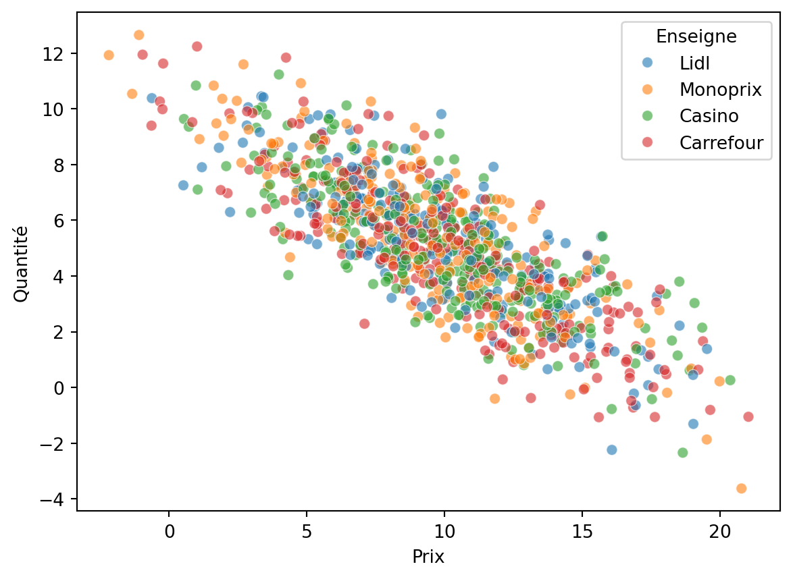
Histogramme
Avec Seaborn, on peut facilement ajouter une courbe d’estimation de densité à un histogramme. Cela permet de vérifier visuellement la normalité des données.
sns.histplot(df_caisse['Prix'], kde=True, color='skyblue')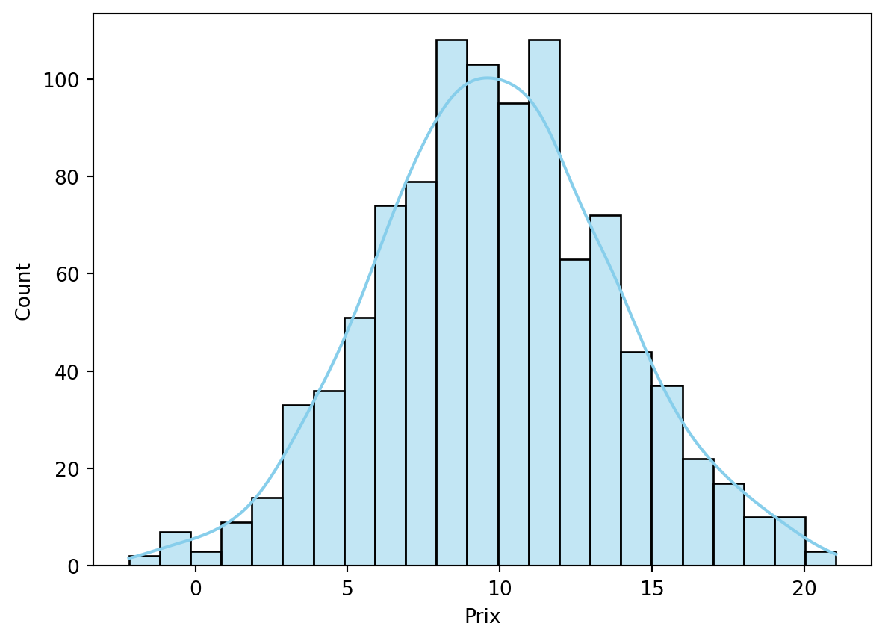
Pair plot
Le pair plot permet d’analyser les relations entre deux variables continues en couplant un nuage de points et des courbes de densité.
subset = df_caisse[['Prix', 'Quantité', 'Enseigne']]
sns.pairplot(subset, hue='Enseigne')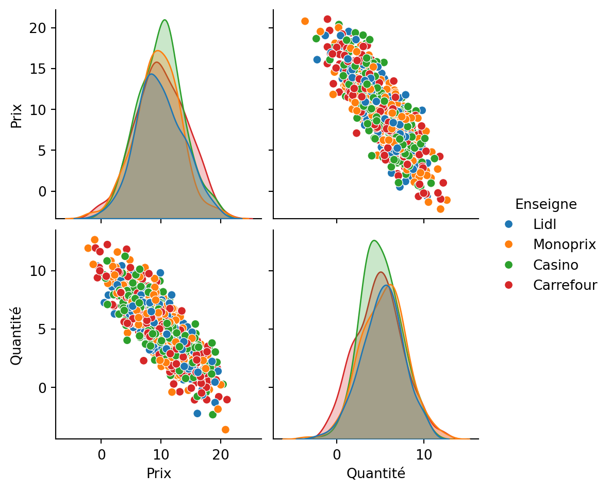
Violin plot
Similaire à la boîte à moustache, le violin plot ajoute une courbe d’estimation de densité afin de mieux visualiser les masses de la distribution.
sns.violinplot(data=df_caisse, x='Enseigne', y='Prix', hue="Enseigne")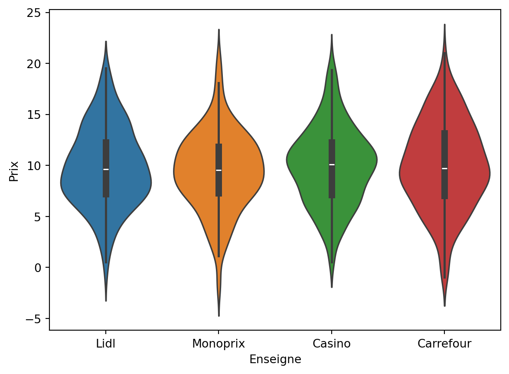
Personnalisation
Comme Pandas, les fonctionnalités graphiques de Seaborn sont basées sur celles de Matplotlib. Là encore, on peut donc personnaliser les graphiques en faisant appel aux fonctions plt.xxx de Matplotlib.
sns.scatterplot(data=df_caisse, x='Prix', y='Quantité', hue='Enseigne', alpha=0.6)
plt.title('Relation entre prix et quantité selon les enseignes')Text(0.5, 1.0, 'Relation entre prix et quantité selon les enseignes')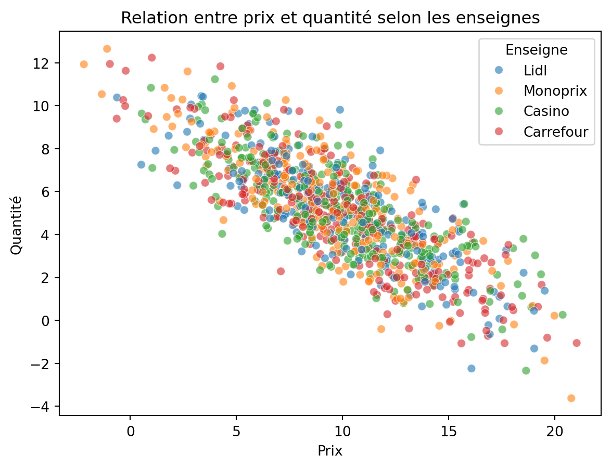
Aller plus loin
Les possibilités de Seaborn sont vraiment larges, et la gallerie d’exemples de Seaborn illustre de nombreuses possibilités visuellement agréables et faciles à reproduire. Pour des besoins plus avancés, on pourra s’orienter selon les cas vers d’autres librairies graphiques :
pour des possibilités de personnalisation maximales (au prix d’un certain coût d’apprentissage) : Matplotlib, la librairie fondamentale de visualisation en Python ;
pour les utilisateurs de R : plotnine, une librairie qui implémente la “grammaire graphique” propre à ggplot2 ;
pour de la visualisation interactive : plotly et bokeh sont les plus utilisées.